このハンズオンラボでは、Glean のエンタープライズ検索プラットフォームを体験し、なぜそれが世界をリードするエンタープライズ検索エンジンとなったのかを理解します。
また、Glean の高度な AI 搭載機能の基盤となる、コア検索機能について実践的に学ぶことができます。
高度なエンタープライズ検索がなぜ重要か？
エンタープライズ検索は、効果的な生成AI実装の中核を成します。
どのようなAIアシスタントであっても、正確で関連性のある回答を提供するためには、高品質で適切にインデックス化された情報へのアクセスが必要です。
Glean の優れた検索・検索精度の機能により、組織は Glean Assistant のような生成AIツールの潜在能力を最大限に引き出すことができます。
次のラボセッションでは、この Glean Assistant を実際に確認していただきます。
このラボで試す重要な機能
このラボでは、Glean の検索インターフェースを操作し、その主要なコンポーネントについて理解していきます。
- スマート検索ボックス：入力中にリアルタイムで候補を提示するオートコンプリート機能をテストします
- 検索結果表示：検索結果をナビゲートし、Glean が関連するドキュメントや情報をどのように提示するかを確認します
- カスタマイズオプション：テーマ設定やインターフェースのパーソナライズ機能を探ります
- セキュリティ統合：認証メカニズムがどのように組織コンテンツへの安全なアクセスを保証するかを理解します
このセッションの終わりには、Glean の検索プラットフォームがどのように効率的で組織に合わせた検索体験を実現し、AI による生産性向上ツールの基盤を整えているかを理解できるようになります。
すでにログインしている場合は、そのまま次のステップ 「最初の検索を実行」 に進んでください。
まだの場合は、以下の手順に従って最初にログインしてください。
- ブラウザでhttps://app.glean.com にアクセスします。
- 自動的に Glean のログインページにリダイレクトされます。

ワークショップモデレーターから提供されたメールアドレスを入力してください。
まず「Work emai」欄にメールアドレスを入力し、「Log in」ボタンをクリックしてください。
以下のような画面が表示されます。
ワークショップモデレーターから提供されたパスワードを入力し、「Sign in」ボタンをクリックしてください。

完了後、Glean検索ページにリダイレクトされます。
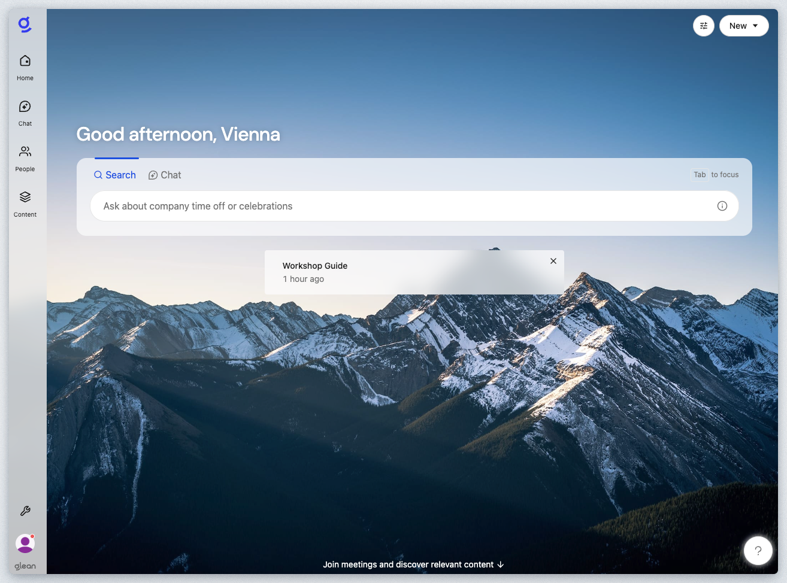
ホームページにGlean検索ページが表示されない場合は、画面左上のホームアイコンのロゴをクリックしてください。

おめでとうございます！ガイドのこのステップを無事に完了しました。
Oktaを介したシングルサインオン認証プロセスにより、Gleanが組織のID管理システムとシームレスに連携していることが実証されました。この合理化されたログイン体験により、追加の認証情報を入力する必要がなくなり、企業リソースへの安全なアクセスが確保されます。Gleanがあなたを認証したことで、プラットフォームは検索体験をパーソナライズし、権限に基づいた適切なアクセス制御を適用し、組織内での役割と責任に合わせた結果を提供できるようになります。このアイデンティティを認識する基盤により、Gleanは関連性のある承認済みコンテンツを提供しつつ、企業が求めるセキュリティ基準を維持します。
Gleanプラットフォームのホームページにアクセスすると、Gleanプラットフォーム内のインデックス化された知識コーパスを検索するための「Google風の」インターフェースが表示されます。
Gleanはパーソナライズされた体験を提供し、チームまたは会社全体向けに作成されたお知らせ、最近作業した可能性のある文書、カレンダー、共同作業中の文書も表示されます。
Gleanの高度な検索フィルターは、検索結果の精度と関連性を高めます。図のように詳細な検索オプションを表示するには、ⓘアイコンをクリックしてください。

ユーザーは特定の単語やフレーズを引用符で囲むことで、検索結果に確実に表示させ、検索精度を高めることができます。

検索ボックスをクリックすると、以下のように過去の検索履歴が表示されたオートコンプリートボックスが開きます：
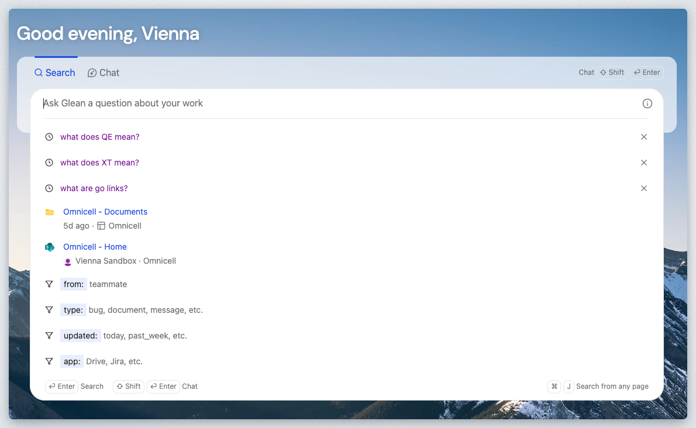
「salesforce」を1文字ずつゆっくり入力して、オートコンプリート機能が動作する様子を確認してください。

キーボードのEnterキーを押してください。
次のようなSERP（検索エンジン結果ページ）が表示されます：
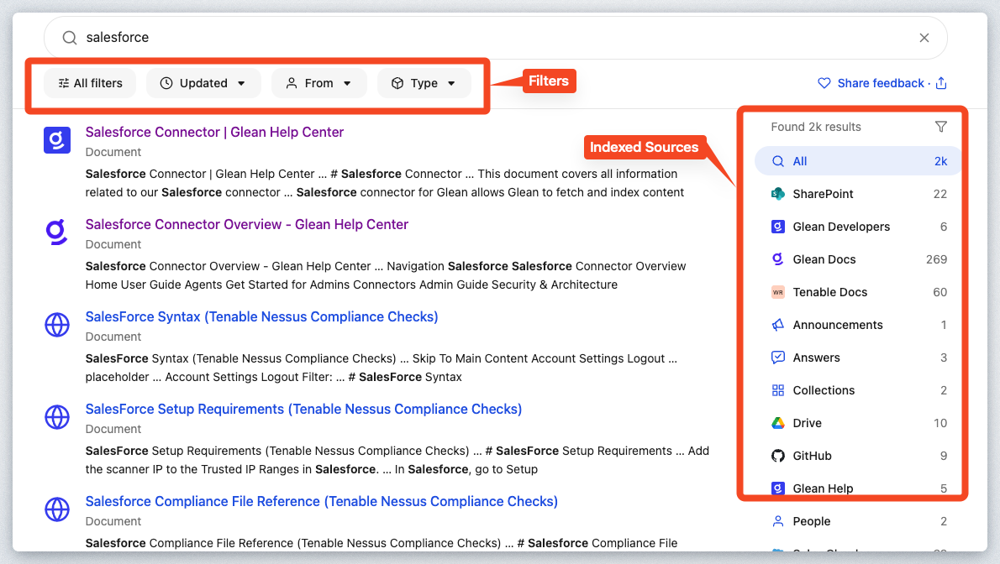
SERPページには以下のような多くの機能があります：
- 関連性に基づいて順序付けられて返された文書
- 右側にインデックス化された情報源の一覧を表示し、各情報源で検出された文書数を明記する
- 日付、著者、データタイプに対するフィルタリング機能。
もちろん、任意のドキュメントをクリックすると、そのデータソースから直接ドキュメントにリダイレクトされます。Gleanはドキュメントのコピーを作成せず、インデックスのみを保存し、ユーザーがネイティブソース内のドキュメントに直接リンクできるようにします。
右側のデータソース一覧で「Glean Docs」をクリックしてください。

検索結果がGlean Docsのウェブサイトからの文書のみ表示されていることに注目してください。当初2,000件あった結果が、269件に絞り込まれています。次に、検索ボックスの下にある「タイプ」フィルターをクリックしてください。
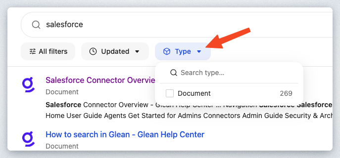
Glean Docs内のアイテムはWebページのみであるため、利用可能なフィルターは"Document"のみです。次にSharePointをクリックしてください。
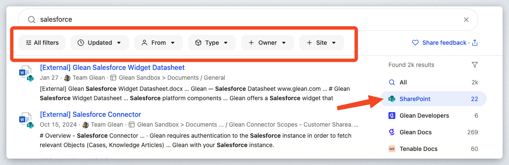
検索ボックスの下にあるフィルターが変更されていることに気づくでしょう。再度「種類」フィルターをクリックすると、PDFとスプレッドシートが利用可能になっていることがわかります。これはSharePointが複数のドキュメントタイプを格納できるためです。
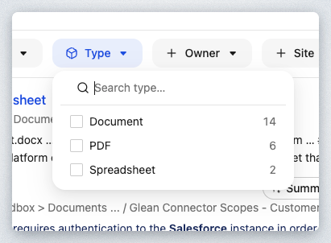
デフォルトの検索結果に戻り、このセクションをまとめましょう。インデックス登録済みソースの一覧で「すべて」をクリックしてください。

いずれかの文書にカーソルを合わせると、「要約」ボタンが表示されることに気づくでしょう。
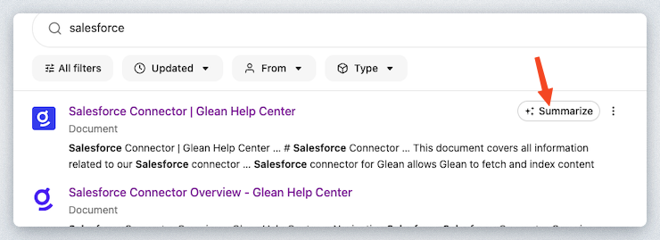
「Salesforce コネクタの概要 | Glean ヘルプセンター」の Glean Developers ドキュメントにカーソルを合わせ、「要約」ボタンをクリックしてください。以下のようなポップアップウィンドウが表示されます：
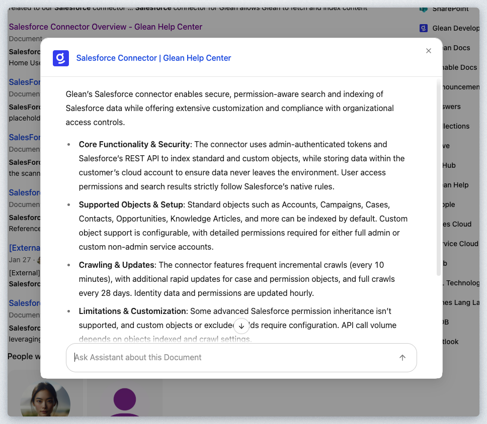
ご覧の通り、ドキュメントの概要が表示されるとともに、このドキュメントに関する質問を投げかけるためのGlean Assistantの会話チャットウィンドウも表示されます。
検索エンジン結果ページ（SERP）とGlean Assistantの緊密な連携は、Gleanのお客様に深い価値をもたらします。Glean Assistantの詳細については、次回のセクションとワークショップモジュールでさらに学びます。
ご希望であれば、この文書について追加の質問を遠慮なくお尋ねください。例えば以下のような質問が考えられます：
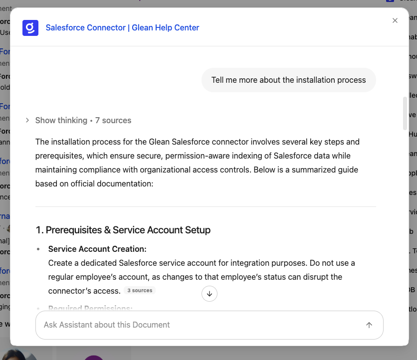
ポップアップウィンドウの右上にある×ボタンをクリックして閉じる。

次にメールの検索を行ってみましょう。検索ボックスを新たに開きます。
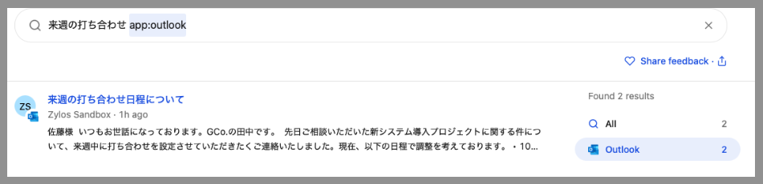
検索ワードにマッチするメールが検索できているはずです。
このようにGleanで一つツールで複数の業務アプリケーションのデータを横断的に探すことができます。
Glean Assistantは、生成AI機能を活用して組織の生産性を向上させるために設計された、安全なエンタープライズグレードのデジタルワークプレイスアシスタントです。ChatGPTと同様に動作しますが、データアクセス権限を考慮し、企業の内部知識に基づいてパーソナライズされた回答を提供するなど、組織向けに特別にカスタマイズされています。
検索バーに以下を入力してください（意図的に質問形式で作成されています）：
ご覧の通り、SERPは以前と同様に関連性の高い順に一連の文書を表示しました。ただし、検索バーに「質問」を入力したため、自然言語で質問に答えるべく、最上位の結果としてGlean Assistantが表示されました。以下に示します：

アシスタントカードの下部にある「もっと見る」ボタンをクリックして、Glean Assistantの回答を展開してください。

Glean Assistantの回答全文を閲覧できるようになり、SERPから直接アシスタントと完全にやり取りできます。生成された回答に対するフィードバックの提供、必要に応じた追加質問や確認事項の提示、前回のラボで学んだ引用情報の確認が可能です。
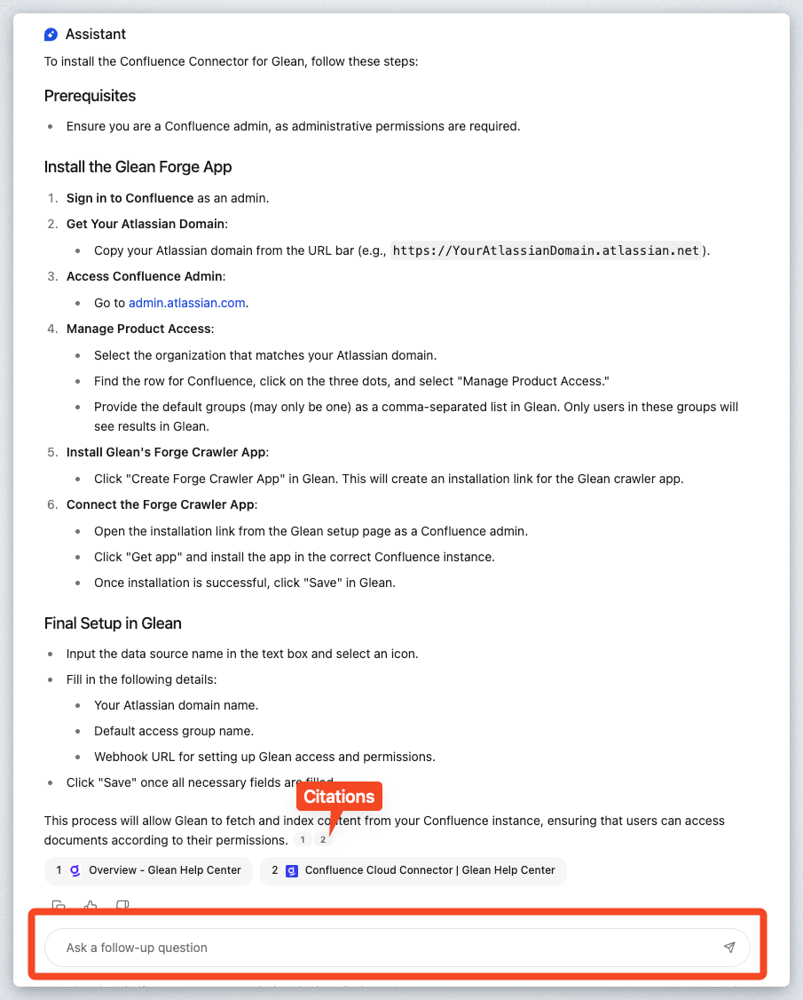
グリーンのアシスタントについては、次のワークショップモジュールで詳しく説明します。まずは次のステップに進んでください。
組織内で特定の分野やトピックの専門家が誰かを知りたい場面はよくあります。通常、この種の活動では、答えを知っている可能性のある他の人に尋ねるか、そのトピックに関する大量のコンテンツを読んで自ら解明しようとするかのいずれかになります。
Gleanは社内の全コンテンツを読み込み、変更を常に把握しているため、社内の専門家が誰かを把握しています。検索ボックスに以下を入力してください：
以下のような結果が表示されるはずです：
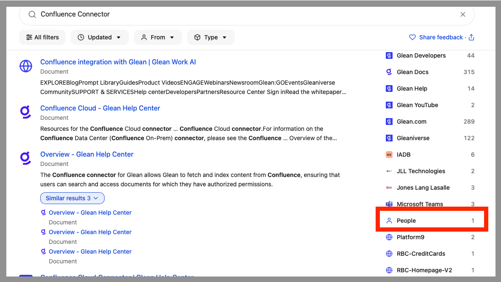
Peopleで検索対象を絞ってください。
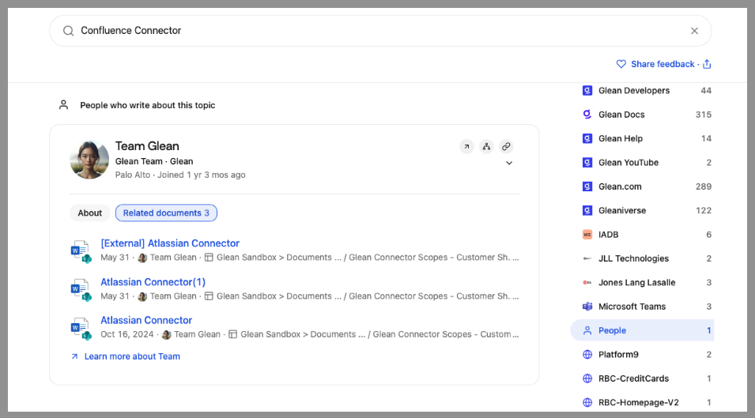
ご覧の通り、ユーザー「Team Glean」がConfluenceコネクタのエキスパートとなっています。本番環境であれば、これは組織内の実際のユーザーに相当します。では、プラットフォームはどのようにTeam Gleanをエキスパートと判断したのでしょうか？
前述の通り、Gleanは企業全体のナレッジを読み取り、コンテンツの作成者・編集者を学習し、その情報をコンテンツ自体の文脈と関連付けています。 Gleanはユーザーが組織内の階層構造のどこに位置するかも把握しています。
Gleanが特定の方法で応答した理由（この場合は専門家識別）を理解したい場合は、新たに検索ボックスを開きGleanに直接尋ねてみてください：
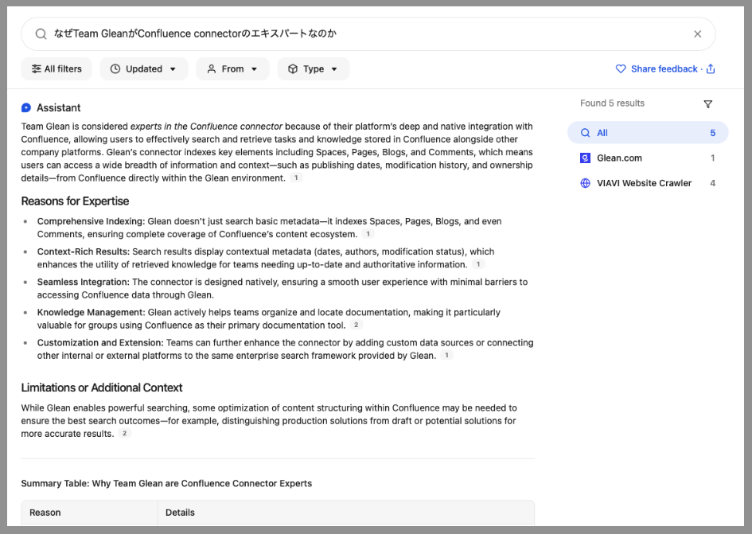
アシスタントがエキスパートとして判断した根拠を提示してくれています！
Gleanは、ウェブポータル経由でのドキュメントや回答の検索だけに限定されません。どこからでも「Glean」する方法を見てみましょう。
検索結果ページ（SERP）で、下図のように「Salesforce Connector Overview | Glean Help Center」ドキュメントをクリックし、新しいタブで開きます。
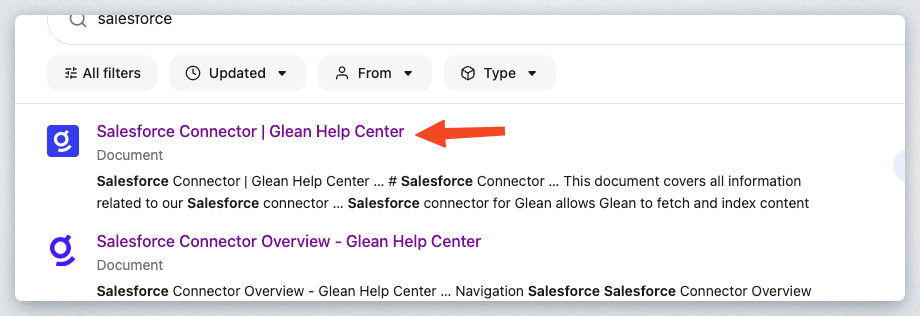
https://docs.glean.com の Glean 公開ヘルプドキュメントにリダイレクトされました。具体的には Salesforce コネクタに関するヘルプドキュメントです。必要に応じてこのドキュメントをお読みいただけます。ただし、この操作を行っていただく目的は、Glean プラットフォームのもうひとつの機能「Glean Where you Work」をご紹介するためです。
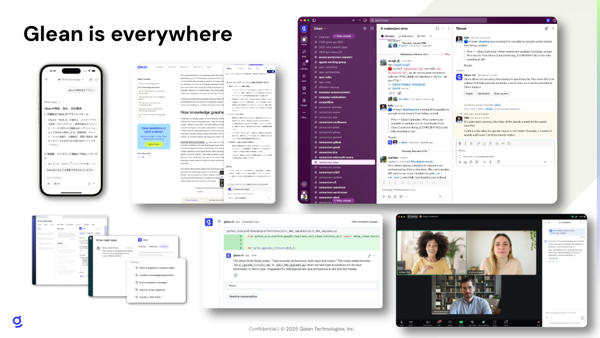
日常業務の流れの中で自社のナレッジに即座にアクセスできることは、生産性を飛躍的に向上させます。Gleanをご利用のお客様は、ブラウザにプラグイン/拡張機能をインストールすることで、文字通り指先ひとつでGleanをポップアップ表示できるようになります。

Glean Extensionをインストール済みの場合、Cmd+J（Mac）またはAlt+J（Windows）を押すと、Glean Platformの全機能を備えたサイドバーが表示されます。
大半の方はインストールされていないでしょう。お時間と権限があればノートPCにインストールするか、以下のスクリーンショットをご覧ください。
以下は、ブラウザにGlean拡張機能をインストールした際に表示されるサイドバーのスクリーンショットです。
上記のように、開いている文書/ページの概要を確認したり、知識のコーパス全体を検索したり、現在のページの内容に関連する推奨文書を表示したりできます。
ブラウザ拡張機能に加え、iOSおよびAndroidアプリも各アプリストアで提供されています。
それでは、前の手順で表示したGlean SERPを含むブラウザタブに戻りましょう。引き続きSERPの詳細とユーザーが利用できるオプションについて掘り下げていきます。
このセクションでは、SERP内の項目で利用可能なオプションについて詳しく学びましょう。新しい検索を実行し、検索ボックスに以下を入力してください：
回答カードへの応答は、以下に示すように最初の検索結果となります：

カードの右上にある3つの点（...）をクリックしてください。

このメニューはSERPの全検索結果で利用可能です。以下に各オプションを説明します。
リンクをコピー - 名前の通り、対象項目のリンクをクリップボードにコピーします。
トップに固定 - 新しいウィンドウが表示され、特定の検索クエリに基づいてこの結果を最上位に固定できます。

コレクションに追加 - コレクションは、単一のトピックで関連するドキュメントをすべてのツールにわたって整理する簡単な方法です。他のチームメンバーが簡単に見つけて使用できるように、一連のドキュメントをまとめる方法と考えてください。

Goリンクを作成 - Goリンクは、社内の重要なURLを「go/link」形式の覚えやすい短いリンクに変換する方法です。Goリンクは頭の中のブックマークのような役割を果たします。一度見たり聞いたりすれば、その場でアクセスする方法がすぐにわかます

Create Answer - アンサーとは、Gleanで作成する一口サイズの情報の断片であり、チームメンバーや将来のチームメンバーが抱える可能性のある一般的な質問に答えるためのものです。これは、既にアンサーとして存在しないコンテンツに対して表示されます。
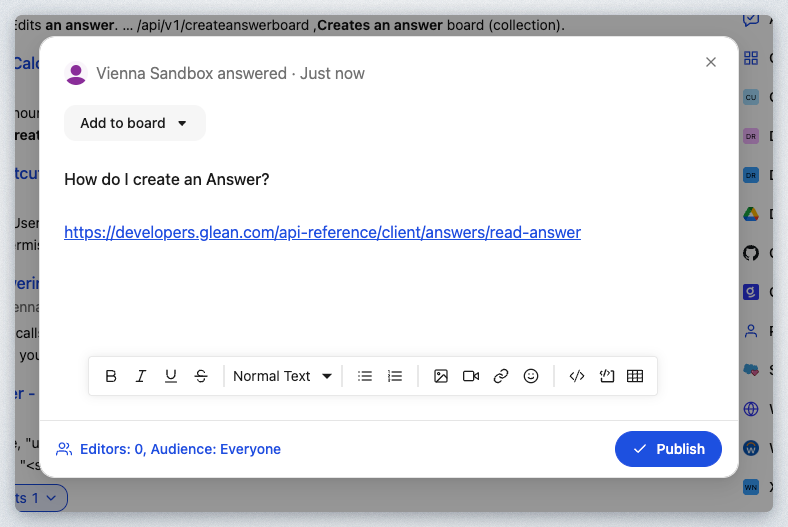
Request Verification - Gleanを使用して社内の異なるツールにまたがる文書を検索する際、Gleanの検証機能により、文書が検証済みかどうかを簡単に確認できます。文書が重複、誤り、不完全、古い、その他該当する場合、誰かに検証を依頼できます。
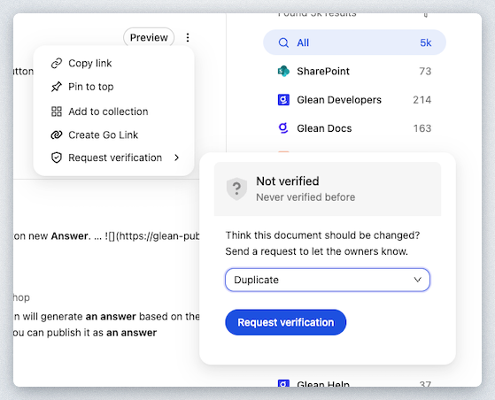
Verify or deprecate - 検索結果に表示されているアイテムの所有者である場合、そのドキュメントが最新であることを他のユーザーに知らせるために検証できます。検証済みのドキュメントは、検索結果に緑色の盾マークが表示されます。

ユーザーがコンテンツを検索し、利用可能な様々なオプションとやり取りする過程で、Gleanにはフィードバック信号が返され、検索結果とGleanナレッジグラフの改善に役立てられます。
Gleanナレッジグラフは、Gleanのエンタープライズ検索プラットフォームの中核を成す強力なツールであり、ユーザーのクエリに対して最もパーソナライズされ関連性の高い結果を提供するように設計されています。
Gleanナレッジグラフは、貴社のインデックス化された情報をリアルタイムモデルで処理する、Gleanエンタープライズ検索プラットフォームの基盤として機能します。この高度なシステムは、組織内のコンテンツ、人物、活動間の関係性を理解することで、高度にパーソナライズされ文脈に沿った検索結果を実現します。
ナレッジグラフは、貴社の企業データを包括的に理解するために連携する3つの基本要素、すなわちコンテンツ、人物、活動に基づいて構築されています。

ワークショップのモジュールを進めていく中で、ナレッジグラフについてさらに詳しく説明していきます。
このラボでは、主要なエンタープライズ検索エンジンとしてのGleanの中核機能を包括的に概説し、職場におけるその価値を示す複数の重要領域をカバーしました。実践的な操作を通じて、Glean検索ページの操作方法、検索の実行方法、結果との対話方法を学びながら、オートコンプリート、セキュアアクセス、カスタマイズ可能なテーマといった高度な機能を体験しました。
Glean Assistantの統合により、文書要約や追跡質問が即座に可能となり、検索体験が大幅に向上。これにより情報取得の効率性と精度が同時に向上します。本ラボでは、Gleanブラウザ拡張機能が企業知識をユーザーのワークフローに直接組み込み、必要な情報が必要な時に必要な場所で提供することで生産性を高める仕組みを実演しました。
さらに、コンテンツ作成・編集活動に基づき組織内の専門知識保持者を特定するエキスパート検索機能も紹介されました。本ワークショップでは扱いませんが、Gleanは自動回答生成や用語集作成機能も提供。組織固有の用語体系や要件に適応し、手作業を大幅に削減しながら正確な情報を提供します。
これらの機能群は、Gleanが企業検索を単なるクエリツールから、日常業務プロセスとシームレスに連携するインテリジェントなナレッジプラットフォームへと変革する実例を示しています。